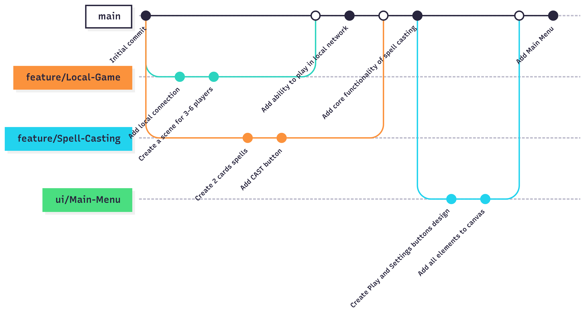

CONTRIBUTING
Kanban Board
We track our work at This Kanban board, actually it's a project at GitHub for our Backlog.
To Do
In this column issues that were defined and formulated, but no one started work with them yet
The Entry Criteria
- Defined the object of the issue
- Created list of subtasks
- The issue field "Story Points" was filled in
- The Acceptance criteria is defined
In Progress
In this column issues that already were assigned with someone and added in the sprint milestone
The Entry Criteria
- The issue description was revised to provide missing details
- The issue was added to the current sprint.
- The issue was assigned with team member
Ready To Deploy
In this column issues that actually done but not reviewed yet, so does not deployed yet
The Entry Criteria
- All sub-tasks of the issue were completed
- The issue is ready to be reviewed
Done
In this column issues that passed the Acceptance criteria and were deployed
The Entry Criteria
- The acceptance criteria were approved
- All changes introduced to complete the issue were deployed to the production environment.
Git WorkFlow - GitHub flow
- Firstly, we create a Milestone for the Sprint (week) at Sprint planning
- Create issues for tasks, formulate the sub-tasks
- Create Acceptance Criteria for each issue
- For each issue we define a suitable labels
- Each issue is assigned to team members, it's decided at Sprint Planning
- Add all tasks, that we difine at Sprint Planning, to the Milestone as a issues
- Create branches for each feature or issue, that named clear
- We have no specific commit messages format, but every message must have meaning
- When the issue is ready to deploy, Create a pull request using the template
- Then the assigned reviewer checks the changes and approve them, Megre the PR
- If there any issues in merging, reviewer and one, who work in branch resolve them
Git WorkFlow illustation using a Gitgraph diagram (Meramaid): 
Secrets Managment
We use the GITHUB_TOKEN for GitHub Actions and some custom secrets for work with unity, also for CI/CD Pipeline : UNITY_EMAIL , UNITY_LICENSE and UNITY_PASSWORD. We store them in GitHub Repository → Settings → Secrets and variables → Actions. So no one has acces to them.